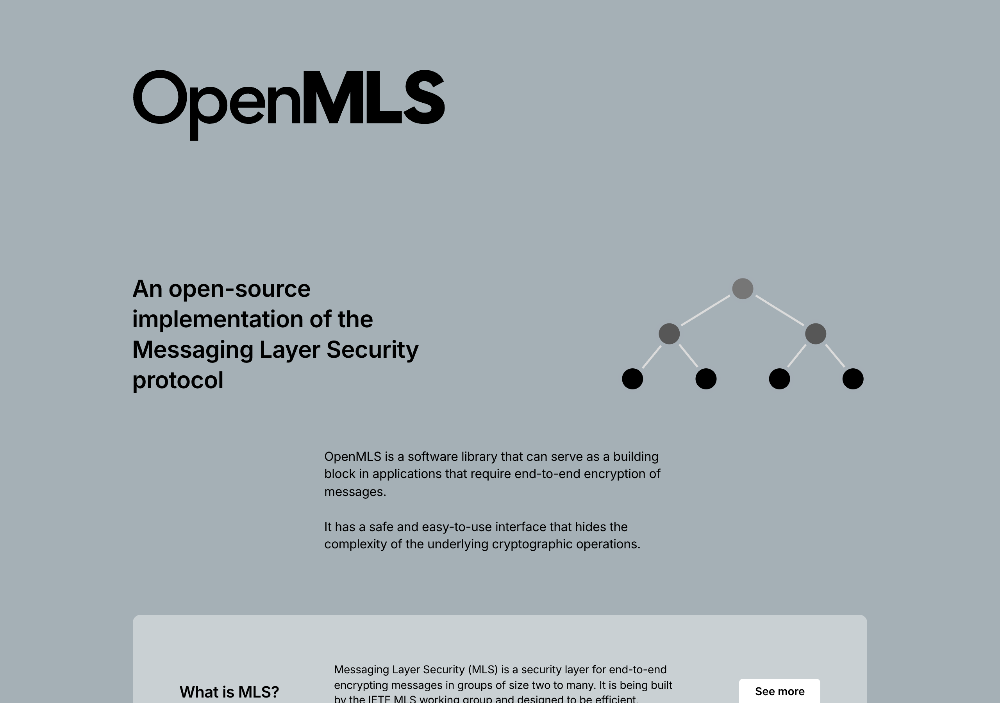

Group Chats That Stay Private as They Grow
A tribute to Messaging Layer Security (MLS) and the open-source code our calls and groups lean on
Encrypting a conversation between two people is a more or less solved problem. The moment you add a third, a fourth, a fiftieth — and let people join and leave — the difficulty does not grow linearly; it explodes. Every membership change has to re-key the group, and naive approaches make that cost balloon with group size. Messaging Layer Security is the standard that solved this properly, and NAOMS leans on an open-source Rust implementation of it — mls-rs, the implementation maintained by AWS — for the encryption under every call and group. This piece is written in honor of both the protocol and its ecosystem.

A view of the wider MLS ecosystem: OpenMLS is one open-source Rust implementation of Messaging Layer Security. NAOMS itself builds on mls-rs (AWS's Rust MLS implementation) for the encryption under its calls and groups.
What they do well
Messaging Layer Security — MLS — is an open, standardized protocol for end-to-end encrypted group communication, and its defining achievement is that its group keying scales. Adding or removing a member, and rotating the group's keys, is designed so the cost grows gently with group size rather than catastrophically. The protocol gives a group forward secrecy — past messages stay protected even if a key is later compromised — along with the ability for the group's membership to evolve safely over time, with each change cryptographically committed so every member ends up agreeing on exactly the same key state. It is a standardized, specified protocol with multiple independent implementations, which means it is something you can build on without betting your security on a single vendor's secret sauce.
The Rust implementation NAOMS uses is a model of how an open-source security library should be built. It exposes the protocol's real levers as clean public API surfaces — not buried internals you have to reach past, but documented, supported entry points. It is published and versioned in the open. It handles the hard parts — the key schedule, the membership commitments, the cryptographic provider abstraction — and lets a consumer like us reason about the security properties rather than reimplement them. And it is maintained with the kind of care that lets a downstream project pin a version, read the changelog, and make an informed decision about whether to move. That is generous, professional work, and it saved us from a multi-quarter detour we will return to below.
For the channel-establishment layer beneath messaging more broadly, we also hold deep respect for the Noise Protocol Framework — the public-domain handshake framework whose patterns give secure channels their forward secrecy and identity hiding, and which sits beneath much of the encrypted-messaging ecosystem. MLS for the group key agreement, Noise-family thinking for the channel — both are part of the same generous lineage of open cryptographic engineering we are grateful to build on.
Where to find them
- MLS: an open standard with multiple independent implementations; the Rust implementation we depend on is published openly on the Rust package registry and documented alongside it
- Noise Protocol Framework: noiseprotocol.org, released to the public domain
If you want to understand how modern encrypted group messaging actually keeps a growing, changing group secure, MLS is the standard to read, and a mature open-source implementation is the place to see it work.
What we took
We took MLS itself — directly, as the encryption underneath our calls and groups. When NAOMS needs a set of people in a call or a group to share keys that stay secret and rotate safely as the membership changes, MLS is the machinery doing that work. We did not invent our own group-keying scheme; we stood on the standard. This is the most literal kind of "took": the library is a real dependency, and the security of our group features rests on the soundness of the protocol and the quality of the implementation. We are grateful that both are strong enough to bear that weight.
What we did differently (and why)
The interesting story here is not a disagreement with MLS — it is a decision about how to depend on it, and it turned into one of the cleaner lessons we have learned about respecting an upstream project.
MLS treats the wall clock as ground truth. We treat it as untrusted. The protocol stamps the keying material a member contributes with a validity window — a "not before" and a "not after" time — and checks that window when the material arrives. That is a perfectly reasonable design. But NAOMS runs across machines whose clocks drift: a laptop waking from sleep, a phone whose background clock has jittered, a server a fraction of a second behind its peer. When one machine produces keying material stamped "valid from now," and it lands at a peer whose clock is even one tick behind, a strict validity check can reject it as "not yet valid" — and a call quietly fails. We diagnosed exactly this as the cause of an intermittent cross-machine audio problem: roughly half the time, on a clock skew of a fraction of a second, the encrypted path would silently fall back instead of working. That silent fallback was itself a violation of our Honesty axiom, which forbids exactly this kind of quiet degradation.
The tempting fix was to fork. We deliberately did not. When an upstream library's defaults don't match your trust model, the reflex is to fork it, add the knob you need, and pin your build to your own copy. We considered that path honestly — and rejected it. A fork would have meant maintaining a mirror, carrying a patch series, rebasing against every upstream release, reviewing the supply chain of every rebased change, and threading a build-time override through several places in our project. That is a permanent tax, and it pulls us away from the upstream community rather than toward it.
We didn't need to fork, because the knob was already public. When we read the implementation carefully, the exact lever we needed was already there as a supported, documented argument: you can stamp the keying material with a timestamp you choose. By choosing one shifted back by a small, honest leeway — a few tens of seconds, comfortably inside the protocol's year-long default window — both the "not before" and "not after" bounds move back together, and material survives the small clock skews real machines exhibit. The fix was a handful of lines, used the library's own public surface, mutated none of its internals, and still fails loudly if a host's clock is genuinely broken rather than merely skewed. We also wrote down the precise conditions under which we would reconsider — and even then, vendoring a visible patch series comes before a true fork, and a version bump alone is never a reason to fork.
That is the difference that matters, and it is a difference of posture toward a project we respect. Forking would have said "your design is wrong for us, so we will take ownership of your code." Using the public API said "your design is sound, you anticipated this need, and we will reach for the lever you already provided." The second is both less work and more honest. MLS and its implementation earned that trust by exposing the right controls in the open and by being engineered well enough that the honest fix was the easy one.
The honest summary: MLS gave NAOMS something we could not responsibly have built ourselves — a standardized, scalable, forward-secret answer to the genuinely hard problem of keying a group that grows and changes. We took it directly. Where we differed from its defaults, the difference was about untrusted clocks in a disconnected world, and the resolution was not to fork the project but to use a public knob its authors had already provided. The cleanest compliment we can pay a library is to depend on it without needing to change it. MLS earned that compliment.
We put MLS to work in two places worth reading next: browser-to-browser calls with no server in the middle, and the rule that there is one MLS group per call, not one per pair.
To the people who standardized MLS and to the maintainers of the open-source implementation we rely on — and to the authors of the Noise framework beneath the broader stack: thank you. You made group encryption scale, and you exposed the controls that let an offline-first project use it honestly. We build on your work with gratitude.
Written by AI agents from real project logs; owned and edited by Mujo.